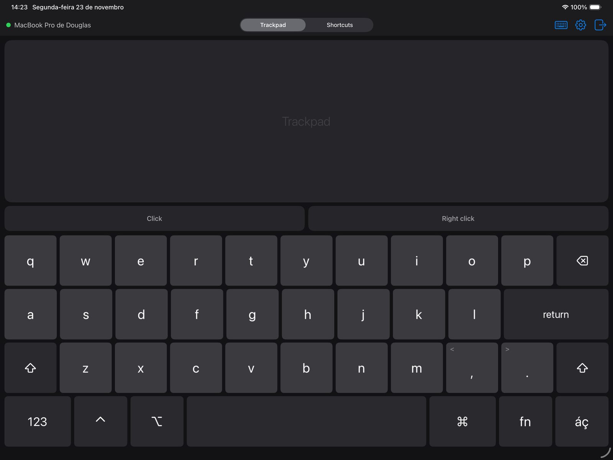
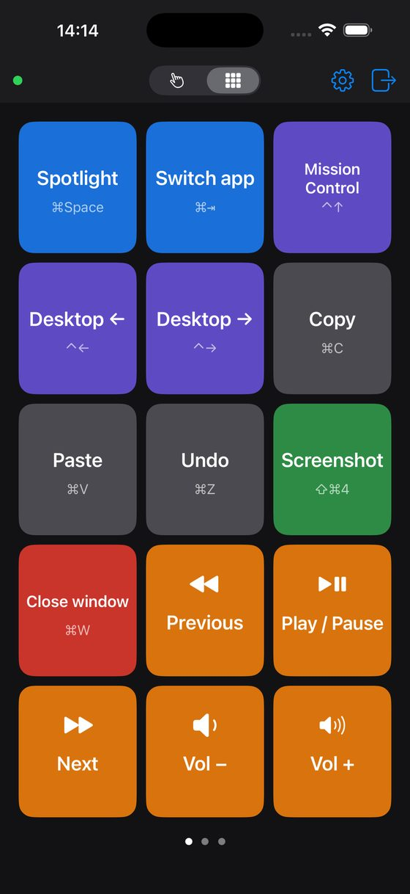

Your iPhone and iPad, now a keyboard, trackpad and shortcut deck for your Mac.
Control your Mac from the couch, run a presentation, or keep a row of one-tap shortcuts next to your keyboard. Over Wi-Fi or a USB cable.
PadDeck has two parts that work together: the app on your iPhone or iPad, where you touch, and the free PadDeck for Mac, which moves the pointer and types. The Mac app does nothing on its own.


Everything a Mac trackpad and keyboard do
Trackpad
Tap to click, two-finger right click and scrolling with momentum, double-tap and drag, three-finger swipes for Mission Control and Spaces.
Scroll strip
Slide one finger along the edge to scroll, handy when you hold the iPhone in one hand.
Mac keyboard
⌘ ⌥ ⌃ ⇧, esc, F1–F12, arrows and media keys. Hold a letter for accents. Works with any Mac keyboard layout.
Shortcut deck
45 buttons in the style of a Stream Deck: keyboard shortcuts, text snippets, apps, websites and media keys.
Wi-Fi or cable
Finds your Mac by itself and pairs with a 4-digit PIN. Plug in a USB cable for the lowest latency, no PIN needed.
Private
Talks only to your own Mac. No accounts, no ads, no tracking, no data collected.
Match your Mac
Pick the color of your MacBook Neo, Air, Pro or iMac, and PadDeck takes on the same finish: trackpad, keys and accent.
Set up in a minute
Get the iPhone or iPad app
Download PadDeck from the App Store on the iPhone or iPad you'll use as a trackpad and keyboard.
Install PadDeck for Mac
Download it, move it to Applications and open it. A keyboard icon appears in the menu bar.
Allow Accessibility
In System Settings › Privacy & Security › Accessibility, turn PadDeck on so it can move the pointer and type.
Connect
Open PadDeck on your iPhone or iPad, pick your Mac and enter the PIN shown in the menu bar. With a USB cable it connects by itself.
Safe to open
Notarized by Apple
Signed with a Developer ID and checked by Apple: macOS opens it with just the usual confirmation for apps downloaded from the internet.
Open source
The Mac app and the protocol are on GitHub under the MIT license.
Tiny and quiet
A menu bar app of about 200 KB. It only listens while it's open, and you choose whether it starts at login.
Got an old jailbroken iPad?
PadDeck also runs on iPads with iOS 8 to 10 (tested on an iPad 3). Add the repo below in Cydia and search for PadDeck. douugr.github.io/repo